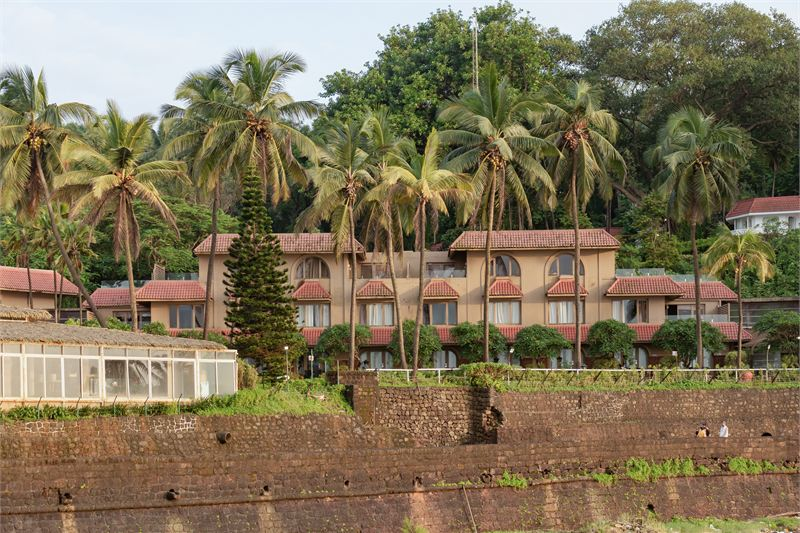
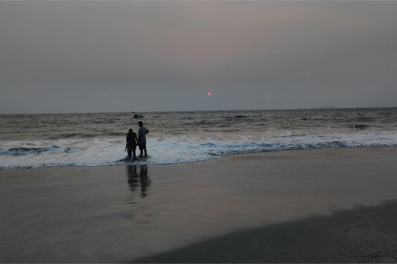
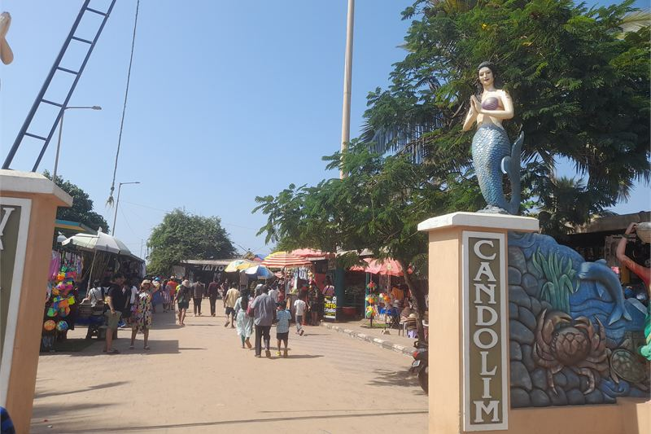

How these hotels were researched
▼- Rates: compared across more than one booking platform on the same day, quoted as a range with the month checked. Not a quote, and they move.
- Guest reviews in bulk: looking for complaints that repeat across many months, not single bad nights.
- Location: checked against a map, measured to the thing you actually came for.
- Real cost of entry: taxes, compulsory meal plans, transfers, and what is not included in the headline rate.
- What I could not confirm is said plainly in the text rather than filled in.
Goa coastline spans 105 kilometres from Querim in the north to Polem in the south. Choosing between North and South Goa changes your daily expenditure, travel times, and noise levels completely. Booking a resort in Calangute when you wanted quiet palm groves means spent hours in traffic jams along the Chogm Road.
North Goa is dense, energetic, and crowded. South Goa is spread out, quiet, and considerably more expensive for local transport. Rates below are indicative ranges checked in July 2026 across major booking channels, reflecting low monsoon rates and peak winter figures.
Taj Fort Aguada Resort and Spa

Built into the ramparts of a 17th-century Portuguese fortress, Taj Fort Aguada was Goa's first luxury resort when it opened in 1974. The location at the southern tip of Sinquerim beach gives it elevation over the sea that newer beachfront properties lack.
You get direct access to Sinquerim beach, manicured lawns, and close proximity to North Goa's dining scene. Stays here put you ten minutes from Candolim's restaurants like Viva Goa and Bomra's. The cottages scattered up the hillside offer privacy, though walking up from the main pool requires some effort in afternoon heat.
Indicative rates start around Rs 18,400 in monsoon months and rise well past Rs 68,000 during December peak. What you pay for is the historic site and location. Superior charm rooms in the main block feel compact compared to modern luxury standards. Noise from nearby water sports operators on Sinquerim beach can reach sea-facing balconies until dusk.
I could not confirm whether the resort's private speed boat transfer from Panaji jetty operates during heavy monsoon sea swells in July.
| Indicative rate | Rs 18,400 to Rs 68,000 per night |
|---|---|
| Rates checked | July 2026 |
| Location | Sinquerim cliffside, North Goa |
| Airport distance | Roughly 42 km from Dabolim, 55 km from Mopa airport |
| Best for | First-time visitors who want North Goa activities with historic resort grounds |
In its favour
- Direct elevated view over Sinquerim beach and Arabian Sea
- Historic 17th-century fort architecture built directly into the grounds
- Close to North Goa top independent restaurants
Worth knowing first
- Standard entry rooms are smaller than expected for this price point
- Water sports noise on public beach below during daytime hours
Alila Diwa Goa

Alila Diwa sits set back from Majorda Beach, surrounded by working paddy fields rather than placed directly on the sand. This layout creates an atmosphere that feels entirely removed from North Goa packed coastal roads.
Rooms here are exceptionally spacious, starting at 44 square metres for terrace rooms. The infinity pool overlooking lush green rice paddies is the central focal point. A dedicated shuttle takes guests on the short five-minute ride to Majorda beach, where the hotel maintains a private beach space with loungers.
Rates range from Rs 12,200 to Rs 38,500 depending on season. The trade-off is distance. You cannot step directly from your room onto the sand. If immediate beachfront access is essential for your morning walk, this inland setting might disappoint.
| Indicative rate | Rs 12,200 to Rs 38,500 per night |
|---|---|
| Rates checked | July 2026 |
| Location | Majorda paddy fields, South Goa |
| Beach access | 5-minute hotel shuttle or 12-minute walk to Majorda beach |
| Best for | Travelers seeking quiet, spacious rooms and paddy field views |
In its favour
- Significantly larger rooms than similarly priced North Goa options
- Quiet countryside setting away from coastal traffic noise
Worth knowing first
- Not directly on the beach, requires shuttle or short walk
- Taxis in South Goa charge high fixed rates with minimal ride-app availability
- Fewer independent dining options within walking distance
Candolim Beach Guesthouses and Mid-Range Stays

This is the area to skip: Baga and Calangute party strips. Unless your primary goal is late-night clubbing on Tito's Lane, staying in central Baga or Calangute brings heavy traffic, loud beach shacks playing music until 2am, and crowded sands littered with trash. Candolim, located just south, offers a far better balance of beach access and decent dining without the chaos.
Independent family-run guesthouses along Candolim-Calangute road offer air-conditioned rooms from Rs 3,200 to Rs 8,500. You get access to the same stretch of sand as luxury resorts, walking access to supermarkets, money changers, and local Goan eateries like Fisherman's Cove.
Rooms are basic, parking is tight, and swimming pools are often small plunge pools rather than resort lagoons. But for travelers spending most of their daylight hours exploring beaches, it frees up budget for meals and scooter rentals.
| Indicative rate | Rs 3,200 to Rs 8,500 per night |
|---|---|
| Rates checked | July 2026 |
| Location | Candolim main strip, 200m to 500m from beach |
| Best for | Budget-conscious visitors wanting good food and easy beach access |
What it costs to actually get there
Flight costs to Goa are relatively stable, but moving from the airport to your resort drains travel budgets quickly. The new Manohar International Airport (GOX) in Mopa sits far north near the Maharashtra border. A prepaid taxi from Mopa to a South Goa resort in Majorda can cost Rs 3,500 and take two hours. Conversely, the older Dabolim Airport (GOI) sits in central Goa, offering much cheaper transit to southern beaches but longer drives to the northern party strips.
Goa restricts app-based ride services like Uber or Ola. You must rely on the GoaMiles app or negotiate with local taxi unions at fixed taxi stands. Hiring a scooter (Rs 400 to Rs 700 per day) is the most economical solution, though police frequently fine riders lacking international permits or helmets.
When to go, and what changes
Goa operates on two entirely different rhythms. From late November through February, the state runs at maximum capacity. Every beach shack is open, night markets in Arpora are crowded, and room rates hit their yearly ceiling.
From June to September, the monsoon shuts down the sea. Red flags prohibit swimming due to dangerous riptides, and temporary beach shacks are completely dismantled. However, luxury resorts drop their rates by up to sixty percent, the paddy fields turn bright green, and the backwater rivers become spectacular. If you want pool-side reading rather than sea swimming, monsoon Goa is a bargain.
North vs South: Which coast fits your trip
If you have four days in Goa and want nightlife, independent cafes, night markets, and heritage walks through Panaji's Fontainhas quarter, pick North Goa near Candolim or Mandrem. If you are planning a relaxed trip focused on reading, uncrowded sands, and slow mornings, South Goa around Majorda or Agonda is worth the higher taxi fare.
Coastal trips in India vary wildly by water condition and season. If you are comparing coastal stays across India, our Kerala backwaters guide examines quiet inland waterways, while the Andaman island resorts review breaks down island logistics and remote beach access.
Practical Goa travel notes
- Goa now operates two airports: Dabolim (GOI) in central Goa and Manohar International in Mopa (GOX) in the far north. Check which airport your flight uses before booking taxi pickups.
- Local taxi unions control airport stands and hotel taxis. GoaMiles app works in limited areas, but self-drive car or scooter rental remains the most economical way to move around.
- Monsoon season running from June to September brings heavy rains and rough seas. Most beach shacks are dismantled, but luxury resort rates drop by up to 60 percent.
- Shack dining prices are not cheap near popular beaches. A seafood dinner at a beach shack can cost as much as a meal in a proper restaurant in Panaji.